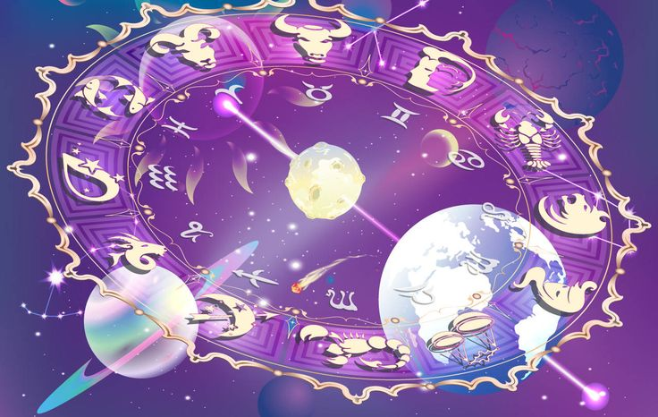

Гороскоп - это предсказание о будущем, основанное на положении звезд и планет в момент рождения человека.
Вот несколько ключевых моментов о гороскопах:
- Астрология: Гороскопы основаны на астрологии, древней системе верований, которая считает, что положение небесных тел влияет на человеческие жизни.
- Знаки зодиака: Астрология использует 12 знаков зодиака, каждый из которых связан с определенным периодом года и набором характеристик.
- Натальная карта: Гороскоп обычно строится на основе “натальной карты” - это диаграмма, показывающая положение планет и звезд в момент рождения.
- Предсказания: Гороскопы могут давать предсказания о личности, карьере, любви, здоровье и других аспектах жизни человека.
- Ненаучный подход: Важно отметить, что астрология и гороскопы не являются научно доказанными системами. Научные исследования не подтверждают влияние положения звезд на жизнь человека.
Разные виды гороскопов:
- Ежедневный гороскоп: Короткие предсказания, которые выходят каждый день.
- Еженедельный гороскоп: Более подробные предсказания, которые выходят каждую неделю.
- Годовой гороскоп: Предсказания, охватывающие весь год.
- Личная карта рождения: Более подробный и персонализированный гороскоп, построенный на основе натальной карты.